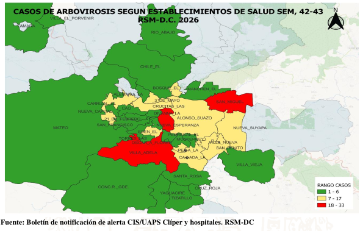
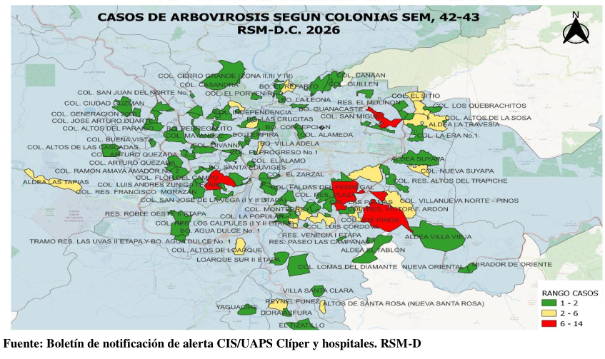

Región Sanitaria Metropolitana del Distrito Central · Licda. Bessy Solano / Técnico UVS-RSM-DC


La vigilancia geográfica refleja la distribución de casos en las zonas urbanas del Distrito Central. Las áreas con mayor concentración requieren fortalecimiento de las acciones de control vectorial y búsqueda activa de casos febriles.
Fuente: Boletín de notificación de alerta CIS/UAPS Clíper y hospitales. RSM-DC
Durante la SE 43 de 2026 se registraron 138 casos de arbovirosis, mientras tanto Zika se mantuvo en cero y Chikungunya reportó 6 casos. En lo que va del año se acumula un total de 2,712 casos de arbovirosis.
Se reportan 138 casos con y sin signos de alarma y 3 casos de dengue grave durante la semana epidemiológica 43. La línea es lineal y se mantiene en zona de seguridad. De la semana 1 a la 43 se contabiliza un total de 13 casos de dengue grave (vs 1 caso en el mismo periodo de 2025).
Índice de Ovitrampas: Entre la semana 25 y 29 se registró un mayor aumento de positividad de ovitrampas colocadas estratégicamente, derivado de la temporada de lluvia aislada que cruza el DC.
En la SE 43 se notifica un total de 64 casos de neumonía, acumulando un total de 2,531 en las primeras 43 semanas del año 2026 en la RSMDC. La línea es ascendente y se ubica en zona de seguridad según el corredor endémico histórico.
De la semana epidemiológica 1 a la 43 del año 2026 se contabilizan un total de 897 casos acumulados de varicela, en comparación con el año 2025 que registró 1,730 casos, mostrando una disminución de 833 casos.
Durante la SE 43 del año 2026 se reporta un total de 728 casos de diarrea, observándose una disminución de 20 casos en comparación a la misma semana del año anterior, posicionándose en zona de alerta.
Durante la semana 43 se reportaron un total de 2 casos de disentería (vs 8 casos al año anterior), manteniendo una tendencia descendente en zona de éxito.
A la semana epidemiológica 43 se reportan 3 casos de hepatitis (todas sus clasificaciones) a expensas de los hospitales, con un leve aumento comparado al año anterior (Acumulado 2026: 137).
Se reportó 1 caso de rotavirus tras ingreso hospitalario. El año 2026 alcanza un acumulado de 127 casos sospechosos atendidos, de los cuales 18 han sido confirmados como positivos.
Hasta la semana 43 del año 2026, se contabiliza un total de 41 casos sospechosos de Sarampión/Rubeola (vs 33 casos en 2025). Cabe destacar que, a la fecha, ninguno de los casos reportados ha sido confirmado como positivo.
Se notifica un total de 45 casos sospechosos de parotiditis acumulados en 2026 (vs 40 en 2025), observando un comportamiento similar con muy pocas variaciones.
Para la semana 43 se notifican un total acumulado de 115 casos sospechosos de Tosferina, manteniendo el estado de alerta.
A la SE 43 del año 2026 se notifica un acumulado de 128 defunciones en menores de un año, en comparación a 116 en 2025, representando un aumento del 10%.
En el año 2026 hasta la SE 43 se reportan 4 Muertes Maternas. La Razón de Mortalidad Materna (RMM) es de 8.8 por cada 100,000 NV, y la Tasa de Mortalidad Materna es de 0.59.
La comparación muestra una tendencia descendente en las defunciones de menores de 5 años, pasando de 116 casos en 2023 a 78 en 2025, consolidando una reducción significativa en el período analizado.
Hasta la SE 43 del año 2026, se han confirmado 80 casos de miasis a causa de GBG (vs 51 casos en toda la semana 53 del 2025).
Se han reportado 59 casos de Chagas en fase crónica en el Distrito Central, en comparación con 35 casos acumulados en la misma SE del año 2025.
Se reporta 1 caso de Leptospirosis y 1 caso de Malaria (Plasmodium vivax) en el Distrito Central. No se reportan defunciones por estas causas.
En la SE 43 se notifican 51 casos de mordeduras de animal transmisor de rabia (principalmente caninos), acumulando en 2026 un total de 2,378 casos (vs 2,581 en 2025). Cero positividades de rabia.
Se acumulan 14 mordeduras de serpiente en lo que va del año, con una disminución de 20 casos menos que el año anterior.
Se notifican 147 casos nuevos de conjuntivitis en la SE 43, con un acumulado de 5,627 casos en 2026, representando una disminución del 24% (1,811 casos menos) respecto a 2025.
Se acumulan 20 intoxicaciones por plaguicidas, notificadas por el segundo nivel de atención provenientes de áreas rurales del distrito central.
| Forma | 2025 | 2026 |
|---|---|---|
| Pulmonar | 124 | 103 |
| Extrapulmonar | 46 | 31 |
| Total | 170 | 143 |
La comparación acumulada reporta 170 casos en 2025 y 143 en 2026, equivalente a 27 casos menos y una reducción relativa del 15.9%. La tuberculosis pulmonar continúa siendo la forma predominante (91% de los casos en 2026).
| Grupo de Edad | 2025 | 2026 |
|---|---|---|
| 15 a 19 años | 3 | 15 |
| 20 a 24 años | 10 | 7 |
| 25 a 29 años | 6 | 12 |
| 30 a 34 años | 5 | 3 |
Se observa un cambio en la distribución hacia edades más jóvenes, destacando el aumento en el grupo de 15 a 19 años (de 3 a 15 casos) y la duplicación en el grupo de 25 a 29 años. Esto resalta la necesidad de fortalecer la educación sexual integral y el diagnóstico oportuno.
Durante enero-agosto de 2026 se observa un incremento de casos del 26% respecto al mismo período de 2025, pasando de 114 a 144 casos. El aumento fue especialmente marcado en mayo (188.9%), junio (35.3%) y julio (23.5%).
Según condición clínica al momento del diagnóstico, predominaron los casos asintomáticos (118 en 2026 vs 97 en 2025, +22%). Los casos de infección avanzada aumentaron de 14 a 22 (+57%), y se registraron 2 casos de SIDA en 2026.
| Cap. CIE / Diagnóstico | Casos | % |
|---|---|---|
| 1. Sistema Circulatorio (HTA, IAM, ECV) | 418 | 20.2% |
| 2. Sistema Respiratorio (Neumonía, EPOC) | 276 | 13.3% |
| 3. Causas Externas (Traumatismos, HPAF) | 214 | 10.3% |
| 4. Endocrinas y Metabólicas (DM2) | 172 | 8.3% |
| 5. Sistema Digestivo (Cirrosis, SDA) | 163 | 7.9% |
| 6. Sistema Genitourinario (ERC, LRA) | 148 | 7.2% |
| 7. Infecciosas y Parasitarias (Sepsis, VIH) | 134 | 6.5% |
| 8. Neoplasias / Tumores | 112 | 5.4% |
| 9. Período Perinatal (Prematurez, Asfixia) | 95 | 4.6% |
| 10. Signos, Síntomas y Hallazgos Anormales | 188 | 9.1% |
| Grupo de Edad | Femenino | Masculino | Total |
|---|---|---|---|
| < 1 año (0-11 meses) | 54 | 70 | 124 |
| 1 - 9 años | 10 | 13 | 23 |
| 10 - 19 años | 20 | 31 | 51 |
| 20 - 49 años | 154 | 305 | 459 |
| 50 - 69 años | 277 | 395 | 672 |
| 70 - 89 años | 351 | 305 | 656 |
| Total General | 918 (44.4%) | 1,150 (55.6%) | 2,069 |
Se consolidaron 2,069 defunciones. La sobremortalidad masculina es marcada (55.6% vs 44.4%). El 68.0% de las muertes se concentró en personas de 50 años o más, siendo el estrato crítico de 70 a 79 años (19.2%).
La semana 43 notifica 64 casos, acumulando 2,531. La línea de tendencia es ascendente pero se ubica dentro de la Zona de Seguridad del corredor endémico histórico (2020-2026).
Se reportan 728 casos en la semana 43. Se observa una disminución de 20 casos en comparación con la misma semana del año anterior, posicionándose en la Zona de Alerta (cerca del umbral superior pero con tendencia a la baja).
De la semana 1 a la 43, el índice de positividad de ovitrampas mostró un mayor aumento entre las semanas 25 y 29. Este incremento se deriva de la temporada de lluvia aislada que cruza el Distrito Central, lo que aumenta la reproducción del vector y requiere intensificar las acciones de eliminación de criaderos.